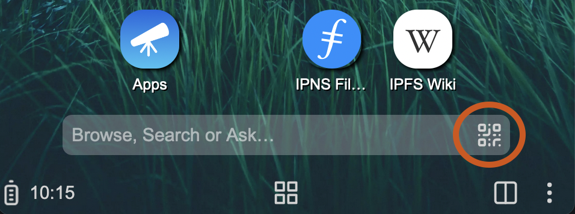

Releases
Fri 20 January 2023
Changelog
This release introduces several new features:
- Easy data sharing between devices: not only page urls, but also files and contacts. For files and contacts, the payload is encrypted and published to IPFS with local discovery and transfer.
- Homescreen switcher support: alternate launchers are cool, and also useful to adapt to different form factors. As an example, Capyloon now includes a simple Media Center Homescreen. Thanks to @MortCodesWeb for making it look so nice!
- The contacts app was re-written. It now has a better look and feel, and showcases easy import/export of contacts over IPFS.
- We now generate installer images for the PinePhone Pro. You can downloading it from our image repository.
Downloads
- Debian amd64 Package
- Mobian PinePhone Pro Package
- Mobian Librem 5 Package
- Pixel 3a (sargo) Image (sha256: 9b87e96ddd68bf771bc17297191d254177fe567325bf991b9dd422f1f6b67bd8)
- Generic System Image (A/B arm64, sha256: bbe56bfbe64d008bf29e8fcbf8eedda3e9f87a98a1c474c3efd6f641dcaee216)
Tue 27 September 2022
Changelog
The major change in this release is the integration of a full IPFS node:
Capyloon now bundles a forked version of
Iroh! This allows
Capyloon to verify locally the integrity of ipfs:// and
ipns://
resources loaded by the browser. To achieve this, the Gecko native
protocol handler has been updated to retrieve content from the local
node over a Unix Domain Socket. The node itself races block fetches from
the p2p swarm with raw CID fetches from a http gateway for optimal
performance.
Other notable changes in this release include:
- The camera app exposes a Web Activity to capture QR Codes. This is leveraged by the home screen to provide a quick access to a URL scanner. This also works in desktop builds using your webcam. 
- The settings app was re-written to use Shoelace components.
- The usual set of random bug fixes :)
Downloads
In addition to testing on devices with these packages, you can also run Capyloon on Mac and Linux by following these steps.- Debian amd64 Package
- Mobian PinePhone Pro Package
- Mobian Librem 5 Package
- Pixel 3a (sargo) Image (sha256: 7036ba1e00a44f0273060131b49dbd555d32b4b563f405e75f816bfa3e5e1b5b)
- Android 10 Generic System Image (A/B arm64, sha256: 291869159527408a06ab6ae08d1bd69b11999863b32137a8126813d308c7bc5f)
Fri 10 June 2022
Changelog
This release introduces 2 building blocks of user self sovereignty: decentralized IDs (DIDs, in our case using static keys) and User Controlled Authorization Networks ( UCANs).
Capyloon users can locally create DIDs and use them to grant capabilities to 3rd party web sites through UCAN tokens, allowing selective access to device resources.
You can experiment with the "Places" demo app: when requesting access, you can control which capability to grant (in this case accessing a subset of the local virtual filesystem), and for how long this access is valid. The site is then responsible for presenting this UCAN token when using the VFS api, and display your browsing history (which is not accessible to "regular" web pages of course).
Further work will improve user management of the UCAN tokens, visiting topics such as:
- UI/UX: How to make the permissions dialog a joy to use?
- DID backup across devices.
- UCAN management: list of granted UCANs, blocklist, etc.
- Integration with other parts of the Web stack, like permissions and cookies (eg. blocklisting UCANs for a site when resetting its storage).
Here's a video showcasing the whole flow:
Downloads
- Debian amd64 Package
- Mobian PinePhone Pro Package
- Mobian Librem 5 Package
- Pixel 3a (sargo) Image (sha256: 684a6cdd0e06a3f376bf63afb98f228e0341106e4bd349c7389e686a3f3bc41d)
- Generic System Image (A/B arm64, sha256: fd123456bf623046e0253cac00c49bfa4f557e29951c67d9149eab66578168cf)
Mon 09 May 2022
Changelog
This release focuses on making it straightforward to publish content to the IPFS network, both for files managed in Capyloon and for 3rd party web pages:
- Several additions to the actions of the context menu like downloading images and saving pages as PDF.
- One click upload to IPFS from the the Files application, either as publicly available resources or protected by a password. A link to the IPFS resource is then shared using a QR Code. See it in action in this video: The content published is permanently pinned to FileCoin thanks to Estuary.
- Capyloon exposes a Web Activity that allow any web page to publish a file to IPFS. You can test this feature here.
Downloads
- Debian amd64 Package
- Mobian PinePhone Pro Package
- Mobian Librem 5 Package
- Pixel 3a (sargo) Image
- Generic System Image (A/B arm64)
Fri 08 April 2022
Changelog
- Improved Web Extensions support: installation of recommended extensions from the FTU, and management from the settings app. See it in action in this video:
- UX cleanup of the "page crashed" and network error pages.
- Implementation of the missing app management commands for Linux Phones, making them as easy to work with as the Gonk based devices.
Downloads
- Debian amd64 Package
- Mobian PinePhone Pro Package
- Mobian Librem 5 Package
- Pixel 3a (sargo) Image
- Generic System Image (A/B arm64)
Fri 25 March 2022
Changelog
- Debian packages are available for Linux phones! Check the dedicated page for details.
- Minor performance fixes and UX polish changes.
Downloads
- Debian amd64 Package
- Mobian PinePhone Pro Package
- Mobian Librem 5 Package
- Pixel 3a (sargo) Image
- Generic System Image (A/B arm64)
Fri 18 March 2022
Changelog
- The First Time Use experience now features these panels: Language, Wi-Fi, Date & Time, Privacy, Search engines and Display. Here's a video of the FTU in action:
- As seen in one of the FTU panels, it's now possible to configure search engines. If you are browsing a page initiated by a keyword search, you can choose a different search engine from the site info panel, making it easy to switch from one to another. We also automatically add new engines based on your navigation, like the one from Wikipedia in this video:
- There is a "Tor" toggle in the Privacy panel of the FTU, to enable initial Tor support based on Arti. You can also turn it on and off from the Quick Settings panel as shown in this video:
Downloads
Tue 08 March 2022
Changelog
- Initial release of the First Time Use app, using Shoelace components.
- MacOS M1 (x86_64) prebuilts are now available for desktop users.
Downloads
Tue 22 Feb 2022
Changelog
- The virtual keyboard can now always be dismissed.
-
A
jackady new-appcommand was added to scaffold new apps.
Downloads
Thu 17 Feb 2022
Changelog
- MacOS M1 (aarch64) prebuilts are now available for desktop users.
Downloads
Thu 03 Feb 2022
Changelog
- Initial release!